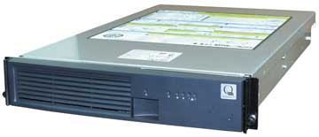

Александр Николов
anikolov@bytemag.ru
История платформы Itanium богата остросюжетными хитросплетениями, где обнадеживающие находки сплошь и рядом перемешаны с разочарованиями, а непридуманным сюжетным ходам позавидует иной мастер детективного жанра. Сама судьба этого проекта достаточно долгое время была окутана густым туманом - аналитики и эксперты не единожды хоронили его, предрекая ничтожные рыночные доли и скорый закат. Однако титаническими стараниями разработчиков-соавторов - корпораций Intel и Hewlett-Packard - новая 64-разрядная процессорная платформа не только выжила, но и успешно преодолела детские болезни роста, свойственные любым инновационным проектам. Отметив четыре года с момента старта и пережив глобальное репозиционирование, платформа Itanium не только доказала свою жизнеспособность, но стала вполне реальным и серьезным конкурентом фирменным RISC/Unix-решениям.
Не претендуя на исчерпывающий охват, в данном обзоре мы попытались рассказать о наиболее интересных и заслуживающих внимания серверных Itanium-платформах, поставляемых на российский рынок отечественными компаниями. Отбирая производителей, мы прежде всего руководствовались соображениями комплексного подхода, когда за той или иной моделью стоит не только комплекс программно-аппаратных средств и услуг послепродажного технического обслуживания, но и так называемая экспертиза - совокупность экспертных и консалтинговых услуг, предлагаемых поставщиком для подбора наиболее эффективного решения, отвечающего насущным и будущим потребностям заказчика.
Отметим также, что фирмы, продукция которых рассматривается в обзоре, отобраны исходя из данных за второе полугодие 2004 г., предоставленных аналитической компанией IT Research (http://www.itresearch.ru), однако перечислены они в алфавитном порядке, без учета объемов поставок/продаж или других аналогичных показателей.
Продукция "Аквариус"
Серверные системы компании "Аквариус" (http://www.aq.ru), построенные на базе процессора Intel Itanium, относятся к серии Enterprise, носящей название AquaServer N и предназначенной для построения центров обработки данных крупных предприятий. Серверы AquaServer N решают задачи, требующие высокой вычислительной мощности, позволяя работать с большими и сверхбольшими СУБД, системами планирования ресурсов предприятия и другими аналогичными приложениями. В настоящий момент в рамках этой серии компания предлагает две Itanium-модели - PI201 и PI406 (кроме того, в серию входит система на базе процессора Intel Xeon MP).
AquaServer PI201 рассчитан на обслуживание задач с большим объемом 64-разрядных вычислений - большие и сверхбольшие СУБД, OLAP и системы принятия решений, системы инженерных расчетов для CAD/CAM/CAE и для решения научных задач: моделирования белковых структур, квантовохимических и геофизических расчетов, задач газодинамики, метеорологических исследований и т. п. В последнем случае немаловажно, что сервер прошел сертификацию в качестве узла отказоустойчивого кластера AquaCluster DPI201/W2003.
|  | Модель AquaServer PI201 из серии Enterprise.
|
Модель AquaServer PI201 представляет собой достаточно компактную конструкцию высотой 2U, предназначенную для установки в стандартную 19-дюйм монтажную стойку. Сервер построен на базе платформы Intel SR870BH2 с набором системных микросхем Intel E8870. В PI201 можно установить до двух процессоров с кэш-памятью 3-го уровня объемом 9 Мбайт, 400-МГц системной шиной и максимальной тактовой частотой до 1,6 ГГц. Максимальный объем оперативной памяти ограничен 16 Гбайт регистровой памяти стандарта PC2100 (DDR266) с ECC-коррекцией ошибок. Для подключения к ЛВС предусмотрено два встроенных гигабитных Ethernet-адаптера. Для наращивания возможностей имеются 64-разрядные слоты расширения PCI-X - один 133-МГц разъем и два 100-МГц. Дисковая подсистема сервера может включать два жестких диска, подключаемых с помощью встроенного SCSI-контроллера стандарта Ultra320. Для подключения периферийных устройств и консоли управления в PI201 присутствует четыре USB-разъема (по два на передней и задней панелях) и последовательный интерфейс с разъемом RJ-45.
Для повышения надежности система питания сервера состоит из трех 350-Вт источников питания, один из которых находится в резерве на случай аварии. Кроме того, системы питания и охлаждения поддерживают горячую замену вышедших из строя компонентов.
Для настройки и управления работой сервера компания предлагает встроенную систему управления Intel Server Management версии 6.1.
AquaServer PI406 - сервер масштаба предприятия, обеспечивающий надежные масштабируемые решения с высоким уровнем готовности и вычислительной мощности. Он способен работать не только с Itanium 2, но и с будущими процессорами этого семейства, обеспечивая защиту инвестиций и плавный переход к архитектуре следующего поколения.
Сердце PI406 - до четырех процессоров с тактовой частотой до 1,5 ГГц, 400-МГц системной шиной и 9-Мбайт кэшем третьего уровня. Сервер построен на базе платформы Intel SR870BN4 с использованием набора микросхем Intel E8870. По сравнению с младшей моделью максимальный объем ОЗУ расширен до 32 Гбайт, прочие характеристики подсистемы памяти остались на прежнем уровне. В сервере предусмотрен один встроенный Ethernet-адаптер на базе микросхемы i82540EM, однако при необходимости функциональность системы можно нарастить с помощью 64-разрядных слотов расширения PCI-X. В случае PI406 пользователям доступны три 133-МГц и пять 100-МГц слотов, причем из последних четыре имеют половинную длину. Для установки жестких дисков предусмотрен встроенный двухканальный SCSI-контроллер стандарта Ultra320 и три 3,5-дюйм отсека с возможностью горячей замены. Как в PI201, у PI406 имеется набор интерфейсов для подключения периферии, но в отличие от младшей модели в PI406 последовательный интерфейс снабжен разъемом DB9.
Система охлаждения сервера включает в себя три рабочих вентилятора и один резервный, причем все они поддерживают горячую замену. Система питания AquaServer PI406 состоит из пары нерезервированных 1200-Вт источников, также с возможностью горячей замены.
Для удаленного администрирования сервера предусмотрена встроенная система управления Intel Server Management версии 6.1.
AquaServer PI201 и AquaServer PI406 совместимы с ОС Microsoft Windows Server 2003 (имеется официальный сертификат соответствия), Red Hat Enterprise Linux AS2.1, Red Hat Enterprise Linux WS2.1 и Novell SUSE Enterprise Server 8.
Решения Kraftway
Весьма интересно выглядит модельный ряд Itanium-серверов компании Kraftway (http://www.kraftway.ru) - он состоит из двух больших групп, в одну из которых входят традиционные системы в 19-дюйм стоечном исполнении, а в другую - SMP-системы, поставляемые в монтажных шкафах высотой 36U.
Двух- и четырехпроцессорные серверы серии Kraftway G-Scale 1-4 CPU - модели ET10, ET20 и ET30 - представляют собой системы с архитектурой, оптимизированной для применения в корпоративных информационных системах при управлении бизнес-процессами и в высокопроизводительных научно-технических приложениях. Высокомасштабируемые 64-разрядные серверы обеспечивают крупным компаниям максимальную отдачу от инвестиций за счет использования решений с лучшей в отрасли производительностью, низкими затратами и широким выбором конфигураций. При этом избыточность конфигурации и резервирование всех важных компонентов сервера, а также расширенные функции автоматической диагностики и устранения неисправностей гарантируют максимальную надежность обработки информации.
Особенности этой группы серверов - предоставление максимальных вычислительных возможностей для реального исполнения ресурсоемких приложений, требующих огромного количества вычислений, открытость архитектуры и более низкая стоимость по сравнению с решениями на базе RISC-технологий.
Модель G-Scale ET10 представляет собой основу высокопроизводительных кластерных систем и центров обработки данных. Она построена на платформе Intel SR870BN4 с использованием набора микросхем Intel E8870 и размещается в достаточно объемном корпусе высотой 4U. Сервер поддерживает от одного до четырех процессоров с максимальной частотой 1,5 ГГц, 400-МГц системной шиной и 6-Мбайт кэшем 3-го уровня. Объем оперативной памяти в базовой комплектации составляет 1 Гбайт при максимуме в 32 Гбайт (для ее установки предусмотрено 16 DIMM-слотов). В этой модели можно использовать регистровую память с ECC-коррекцией ошибок как стандарта PC2100 (DDR266), так и PC1600 (DDR200). Сервер оснащен интегрированным двухканальным SCSI-контроллером стандарта Ultra320 и позволяет установить до трех 3,5-дюйм накопителей в соответствующие отсеки, поддерживающие горячую замену. На борту также присутствует встроенный гигабитный адаптер сети Ethernet.
Система питания G-Scale ET10 состоит из сдвоенного блока питания с мощностью каждого из модулей 1200 Вт. Для повышения отказоустойчивости предусмотрена их горячая замена.
Модель G-Scale ET20 в части функциональной нагрузки - полный аналог ET10. Компактный сервер с высотой корпуса 2U построен на базе платформы Intel SR870BН2 и набора микросхем Intel E8870. По сравнению с предыдущей моделью он поддерживает в два раза меньше процессоров - один или два (сами процессоры в обоих случаях совершенно идентичны). В точности те же параметры имеет и подсистема оперативной памяти, за исключением максимального объема и числа DIMM-слотов для ее установки - в ET20 они равны 16 Гбайт и восемь штук соответственно. Не претерпела принципиальных изменений и дисковая подсистема, лишь число отсеков для установки жестких дисков уменьшилось до двух.
| Компактный сервер Kraftway G-Scale ET20 на базе Itanium.
|
Сервер оснащен тремя блоками питания мощностью по 350 Вт, предусматривающих возможность их горячей замены.
Сервер G-Scale ET30 - один из самых тонких на сегодняшний день серверов, построенных с использованием процессоров Intel Itanium 2; его высота составляет всего 1U. Он предназначен для высокопроизводительных вычислительных кластеров большой мощности - поддержка всего семейства процессоров Itanium 2 (в том числе Madison и Deerfield) и малая высота позволяют достигать высокой производительности при минимуме занимаемого пространства. Для построения кластеров серверы ET30 могут поставляться не только с традиционными сетевыми интерфейсами (Gigabit Ethernet или Myrinet), но и с использованием новых технологий InfiniBand, например, с сетевыми адаптерами и коммутаторами производства Mellanox или Infinicon.
ET30 поддерживает новые процессоры Low Voltage с тактовой частотой 1,0 ГГц и 1,5-Мбайт кэшем 3-го уровня, процессоры с частотой 1,4 ГГц с тем же объемом кэша 3-го уровня, а также процессоры с частотами 1,3/1,4/1,5 ГГц и кэш-памятью 3-го уровня 3,0/4,0/6,0 Мбайт соответственно. Максимальный объем регистровой оперативной памяти PC2100 (DDR266) с ECC-коррекцией ошибок может достигать 8 Гбайт, для ее установки предусмотрено восемь DIMM-разъемов. Сервер оснащен интегрированным двухканальным SCSI-контроллером стандарта Ultra320 (в корпус можно установить только один жесткий диск), а для внешних дисков предусмотрена поддержка RAID-массивов уровней 1 и 5. Для подключения периферийных устройств в ET30 имеется шесть USB-разъемов, два из которых расположены на передней панели.
Энергосистема сервера включает один 650-Вт источник питания, а для отвода тепла сконструирована специальная система охлаждения повышенной эффективности.
Остается только отметить, что все модели серии совместимы как с Linux, так и с 64-разрядными версиями Microsoft Windows, и комплектуются той или иной ОС по желанию заказчика.
Серверы серии Kraftway G-Scale 2-32 CPU - модели 6008, 6016 и 6032 - предназначены для исполнения критически важных бизнес-приложений, высокопроизводительных вычислений и создания устойчивых к сбоям кластерных систем. Они обладают хорошим соотношением цена/производительность и легко масштабируются, обеспечивая защиту инвестиций. Модели серии поддерживают до 8, 16 и 32 процессоров соответственно и обладают возможностью кластеризации. В состав каждой из них входит консоль для централизованного управления системной средой, ОС, серверами, устройствами хранения и сетями хранения данных. Масштабируемость G-Scale 6008, 6016 и 6032 достигается за счет специального коммутатора FSS (FAME Scalability Switch) и набора микросхем Intel E8870, что позволяет создавать системы с числом процессоров 4, 8, 12, 16, 20, 24, 28 и 32. Кроме того, серверы совместимы со следующим поколением процессоров семейства Intel Itanium 2.
К основным особенностям серверов G-Scale 2-32 CPU можно отнести преемственность с младшими моделями серии и простой перенос ПО, встроенную консоль управления ресурсами, большое адресное пространство памяти.
Модель G-Scale 6008 представляет собой отдельную стойку высотой 36U, включающую саму платформу, модуль администрирования, консоль с 15-дюйм ЖК-монитором, клавиатурой и мышью и 8-портовый KVM-коммутатор высотой 1U. Опционально возможна установка дискового хранилища данных.
Архитектура этой модели представляет собой ccNuma-разновидность симметричного мультипроцессинга - четырехпроцессорные модули на базе набора микросхем Intel E8870 соединяются в единое целое с использованием коммутатора FSS (FAME Scalability Switch). Стандартно в G-Scale 6008 установлено четыре процессора Itanium 2, объединенных в виде SMP-модуля, общее же их число можно довести до восьми с помощью второго такого модуля. В сервере используются процессоры с тактовой частотой 1,3 ГГц и 3-Мбайт кэш-памятью 3-го уровня; с частотой 1,4 ГГц с 4-Мбайт кэшем и 1,5 ГГц с кэшем объемом 6 Мбайт. Все три разновидности работают на 400-МГц системной шине. Общий объем оперативной памяти варьируется от 4 до 64 Гбайт (32 DIMM-слота), при этом в каждом процессорном модуле может быть установлено соответственно от 4 до 32 Гбайт. По желанию заказчика используется память либо PC2100 (DDR266), либо PC1600 (DDR200).
| Сервер Kraftway G-Scale 6008 и его расширенный вариант - 6016.
|
Система питания G-Scale 6008 состоит из четырех источников мощностью 1200 Вт каждый, обеспечивающих избыточность и возможность горячей замены. До двенадцати пар вентиляторов с горячей заменой удаляют избыток тепла вовне.
Модель G-Scale 6016 представляет собой расширенный вариант G-Scale 6008 и по всем основным техническим параметрам практически полностью совпадает с ней, за исключением числа процессоров - в случае G-Scale 6016 возможны комплектации с 4, 8, 12 и 16 кристаллами - и суммарного объема ОЗУ, который составляет 128 Гбайт (64 DIMM-слота).
Вершина линейки, модель G-Scale 6032, состоит из двух стоек высотой 36U, и ее в определенной степени можно рассматривать как комбинацию пары G-Scale 6016 в рамках единого решения. Процессорная часть осталась точно той же, что и в предыдущих случаях, лишь увеличилось вдвое число самих процессоров - в минимальной комплектации их теперь 8, в максимальной - 32, при этом доступны промежуточные комбинации из 12, 16, 20, 24 и 28 штук. Аналогичным образом расширился и диапазон доступной оперативной памяти - от 8 до 256 Гбайт (128 DIMM-слотов). Кроме того, до восьми увеличено число источников питания и до 24 пар - число охлаждающих вентиляторов.
Серверы совместимы с ОС Microsoft Windows Server 2003 Enterprise Edition и Datacenter Edition, а также с дистрибутивами ОС Linux компаний Red Hat и Novell SUSE. В комплект поставки стандартно входят компиляторы языков C/C++, Fortran и Math, оптимизированные для платформы Itanium.
Системы R-Style Computers
Itanium-линейка компании R-Style Computers (http://www.r-style-computers.ru) на сегодняшний момент состоит из двух моделей - R-Style Marshall EP 272r и R-Style Marshall EP 471r. Младшая представляет собой новое поколение тонких серверов масштаба предприятия, предназначенных для работы в корпоративных информационных системах совместно с внешними дисковыми системами хранения данных, а также для построения высокопроизводительных кластеров. EP 272r предоставляет эффективное решение для обработки критически важных бизнес-приложений в непрерывном режиме 24 часа в сутки 7 дней в неделю. Старшая модель предназначена для реализации проектов корпоративного уровня, использования в рамках ресурсоемких научных приложений, для технических расчетов любой степени сложности, поддержки ресурсоемких баз данных, требующих непрерывной работы, высокой производительности и вычислительной мощности.
Сервер R-Style Marshall EP 272r поставляется заказчикам в корпусе высотой 2U для установки в 19-дюйм стойку. Он может содержать до двух процессоров с 400-МГц системной шиной и кэшем 3-го уровня объемом 9 Мбайт. В качестве основы использован набор микросхем Intel E8870. Суммарный объем оперативной памяти стандарта PC2100 (DDR266) может достигать 16 Гбайт, для ее наращивания пользователям доступно восемь DIMM-разъемов. Сервер оснащен двумя встроенными гигабитными Ethernet-адаптерами, а для расширения функциональности можно использовать 64-разрядные слоты PCI-X: два работающих на частоте 133-МГц и один 100-МГц. Для установки жестких дисков (имеется два свободных отсека) в EP 272r предусмотрен встроенный двухканальный SCSI-контроллер стандарта Ultra320, позволяющий, помимо прочего, организовать RAID-массив уровня 1. Наконец, для подключения консоли управления и периферийных устройств сервер располагает четырьмя USB-портами и одним последовательным интерфейсом с коннектором RJ-45.
| R-Style Marshall EP 272r - тонкий сервер масштаба предприятия.
|
Система охлаждения Marshall EP 272r состоит из четырех корпусных вентиляторов с возможностью горячей замены, подключенных по схеме 2 + 2, и пары вентиляторов, установленных на процессорах. Система питания сервера включает три 350-Вт источника питания с режимом коррекции, при этом два из них - основные рабочие, а один служит аварийным резервным.
Для управления сервером используется интегрированная система Intel Server Management, поддерживающая стандарты управления IPMI 1.5 и SNMP.
Система R-Style Marshall EP 471r, как и младшая сестра, предназначена для установки в 19-дюйм стойку, однако ее высота составляет уже 4U. В плане базовой части и типа используемых процессоров она не отличается от EP 272r, только вместо двух процессоров здесь можно использовать четыре. Аналогичная ситуация и с оперативной памятью - максимальный объем увеличен до 32 Гбайт (соответственно до 16 выросло количество DIMM-разъемов), а стандарт остался прежним - PC2100 (DDR266). Число встроенных гигабитных Ethernet-адаптеров в EP 471r уменьшилось до одного, а число интерфейсных разъемов для подключения периферии осталось прежним. Обошлось без изменений и в части встроенных контроллеров жестких дисков - ситуация тут полностью аналогична модели EP 272r, лишь число отсеков для установки самих дисков увеличено до трех штук. Гораздо интереснее выглядит ситуация со слотами расширения PCI-X - как и в младшей модели, все они 64-разрядные, однако помимо этого поддерживают и горячую замену. В распоряжении пользователей имеется три 133-МГц и пять 100-МГц слотов.
Система охлаждения Marshall EP 471r по характеристикам полностью аналогична EP 272r, а вот система питания построена несколько иначе - в сервере установлено два 1200-Вт источника питания с режимом коррекции, один из которых играет роль основного, а другой - резервного на случай сбоев и неполадок.
По части управления EP 471r ничем не отличается от EP 272r - здесь также использована интегрированная система Intel Server Management, поддерживающая стандарты управления IPMI 1.5 и SNMP.
Обе системы совместимы с 64-разрядными версиями ОС Microsoft Windows Server 2003 Enterprise, Red Hat Linux и Novell SUSe Linux.
***
Обзор существующих на сегодняшний момент Itanium-решений на этом отнюдь не заканчивается. В одном из следующих номеров мы предполагаем вернуться к этой теме, обратив особое внимание на продукцию ведущих мировых поставщиков.